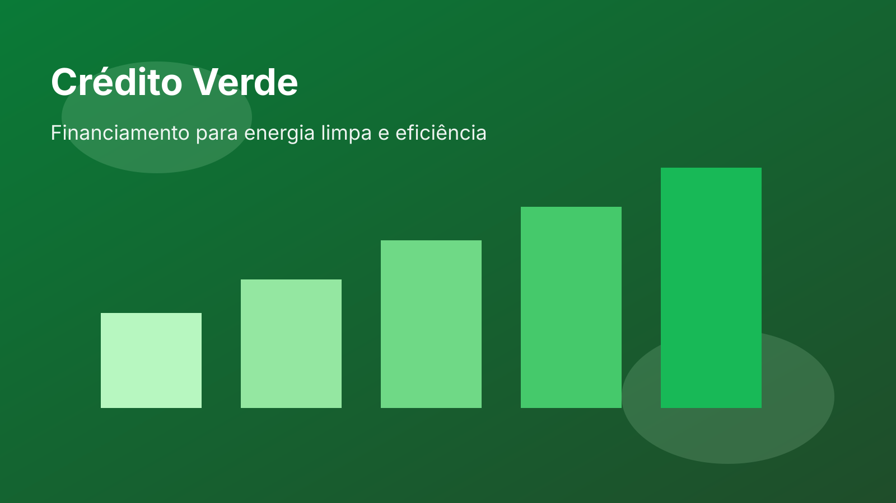

Crédito verde ganha força e acelera projetos sustentáveis

Bancos públicos e privados ampliaram a oferta de crédito para projetos de eficiência energética e geração renovável. As novas linhas têm prazos maiores e juros reduzidos para empresas que comprovem impacto ambiental positivo.
Em levantamento da associação do setor, a procura por financiamento para retrofit energético subiu 34% no último trimestre. Entre os setores com maior demanda estão indústria de alimentos, logística e varejo.
Analistas apontam que o avanço do crédito verde ajuda empresas a reduzir custos operacionais, melhorar indicadores de sustentabilidade e atender exigências de cadeias internacionais de fornecimento.